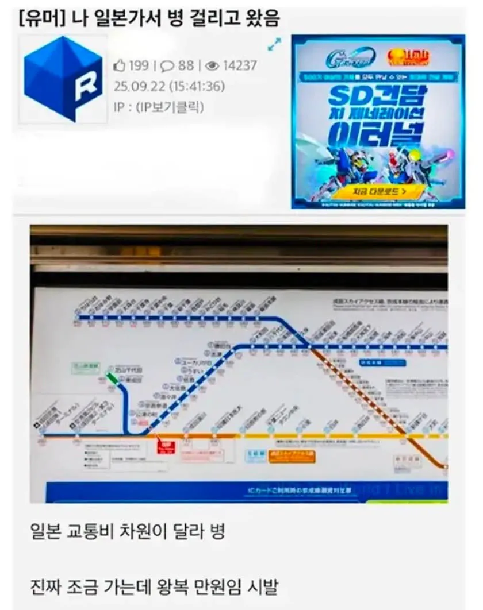

일본가서 일본 달라 병 걸린 근첩..jpg
댓글
ㅋㅋㅋㅋ
저건 진짜로 차원이 다름
심지어 이새기들 지하철 죄다 민영화라
a역이여도 어디 가냐에 따라 입구 자체가 다른데도 있고
같아도 내부에서 ㅈㄴ 복잡함 ㅅㅂ ㅋㅋㅋㅋㅋ
출구에 카드찍는데 안열림 다른출구로가래 ㅋㅋㅅㅂ
이건 ㄹㅇ 차원이 다름;
신칸센 요금 좋아 죽음ㅋㅋㅋ
연료로 금넣는듯
민영화 빔!
교통존느비싸긴해 ㅅㅂ
ㄹㅇ 운전해보면 더좆됨
그냥 작은 다리 하나 타는데 400엔 이지랄임 ㅋㅋㅋㅋㅋ
지하철이... 가 마다 전부 다 있음
서울에 비유하면... 종로1가역, 종로2가역, 종로3가역, 종로4가역 전부 있는 거랑 같음
조금 가다 서고, 조금 가다 서고, 조금 가다 서고... 개짜증임
그나마 싼게 교토아님? 거긴 다가격 똑같은데
택시가 거의 키로당 만원급임 ㅋㅋㅋㅋㅋ
저건 우리나라가 선진국 중에 교통비가 너무 싼거라...
대중교통 회사들 대부분 적자인데 정보 보상액(즉 세금)으로 먹고 사는 이유임
대중교통 가격이 오름 : 물가 및 국민 불만 상승
안올리고 세금으로 적자보전 : 국민은 모름. 가끔 국회의원이 국감같은데서 대중교통 공공기관 불러다가 적자 심하다고 방만경영 고치라고 호통치고 생색낼 수 있음
이러니 근본적인 걸 안고치고 현상유지하는 거지 ㅋㅋ
택시비 차원이다름.. 15분인가? 안되게타는데
2만5천원나옴 씻빨련아
일본에서 그정도면 저렴하게 탔네
저?렴
근데 뭘타도 비싸긴하더라...
아니 한국이 싼건가
특등석 같은거도 엄청 세분화되어있더라 제일높은등급선은 젤앞머리더라고